Comandes importants Windows
Comandes bàsiques i importants per a Windows i Windows Server
CMD vs PowerShell
Windows ofereix dues eines principals de línia de comandes:
- CMD (Símbol del sistema):
És l’eina clàssica de línia d’ordres de Windows. Tot i que és més senzilla, té funcionalitats limitades i és útil per a tasques bàsiques com xarxa, diagnòstic o gestió de fitxers.
- PowerShell:
És una eina molt més potent i moderna basada en .NET. Permet gestionar serveis, processos, actualitzacions, usuaris, scripts avançats i fins i tot automatitzar tasques d'administració del sistema. S'utilitza àmpliament en entorns professionals i Windows Server.
Quan fer servir CMD?
- Per consultar IP, fer ping, apagar/reiniciar, comprovar connexions bàsiques...
- En equips antics o en entorns on no hi ha PowerShell.
Quan fer servir PowerShell?
- Per gestionar serveis, executar scripts, utilitzar comandes com
winget,Repair-Volume,Get-EventLog... - En servidors o automatitzacions avançades.
Comandes
ipconfig
Mostra la configuració IP del sistema.
ipconfig /all
Permet veure la IP, la passarel·la, el DNS i altra informació útil per diagnosticar problemes de xarxa.
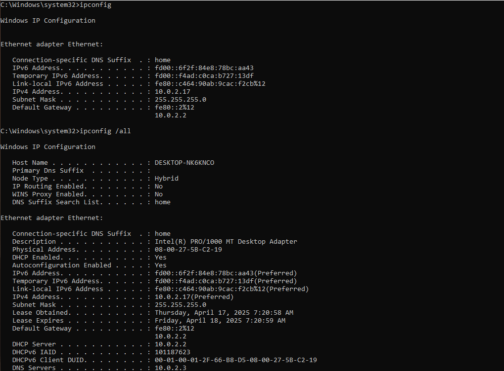
ping
Comprova la connectivitat amb una altra màquina.
ping google.com
Ajuda a verificar si un host respon i mesura el temps de resposta (latència).
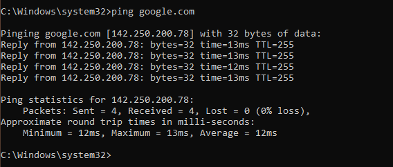
tracert
Segueix el camí que fa un paquet fins a arribar a la seva destinació.
tracert google.com
Permet localitzar on es produeixen talls o retards en la connexió.
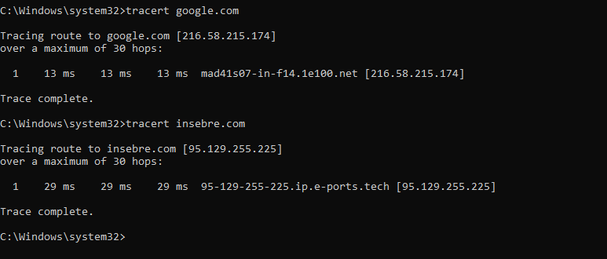
chkdsk
Comprova i repara errors al disc dur.
chkdsk C: /f /r
Detecta i corregeix sectors defectuosos i problemes en el sistema de fitxers.
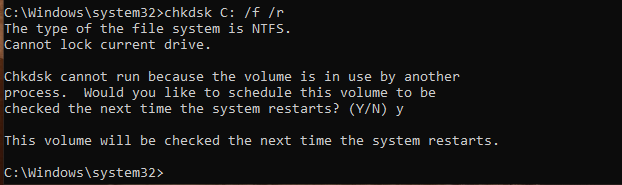
sfc /scannow
Analitza i repara fitxers del sistema danyats.
Repara problemes interns del sistema operatiu causats per fitxers corromputs.
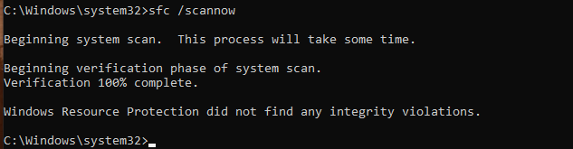
DISM /Online /Cleanup-Image /RestoreHealth
Utilitat avançada per reparar la imatge de Windows.
Pot solucionar errors que ni sfc pot reparar. Molt útil en entorns professionals.
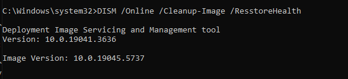
netstat -ano
Mostra connexions de xarxa actives, ports oberts i els seus processos associats.
Ajuda a detectar connexions sospitoses o identificar serveis que estan escoltant a ports específics.
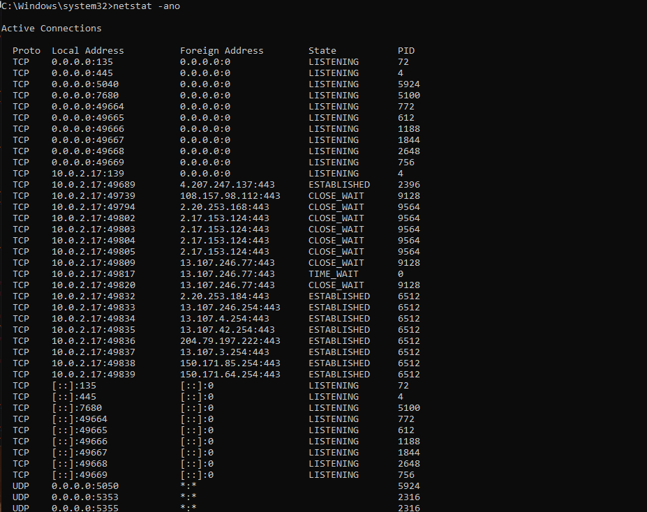
tasklist
Llista tots els processos en execució.
Permet identificar processos sospitosos o que consumeixen molts recursos.

shutdown
Permet apagar o reiniciar el sistema.
shutdown /r /t 0 → reinici immediat
shutdown /s /t 30 → apaga en 30 segons
Molt útil per a administradors que treballen remotament o per scripts programats.
Get-Service (PowerShell)
Llista l'estat de tots els serveis del sistema.
Get-Service
Permet veure quins serveis estan actius, aturats o tenen problemes.

Set-ExecutionPolicy (PowerShell)
Canvia la política d’execució de scripts de PowerShell.
Set-ExecutionPolicy RemoteSigned
Cal activar-ho per permetre l’execució de scripts propis o descarregats.
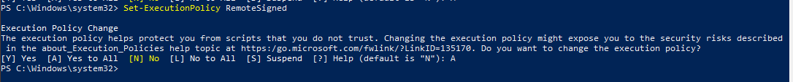
winget install (PowerShell)
Instal·la aplicacions des del repositori oficial de Microsoft.
winget install --id=Piriform.CCleaner -e
Facilita la instal·lació de programari des de línia de comandes. Ideal per automatització.
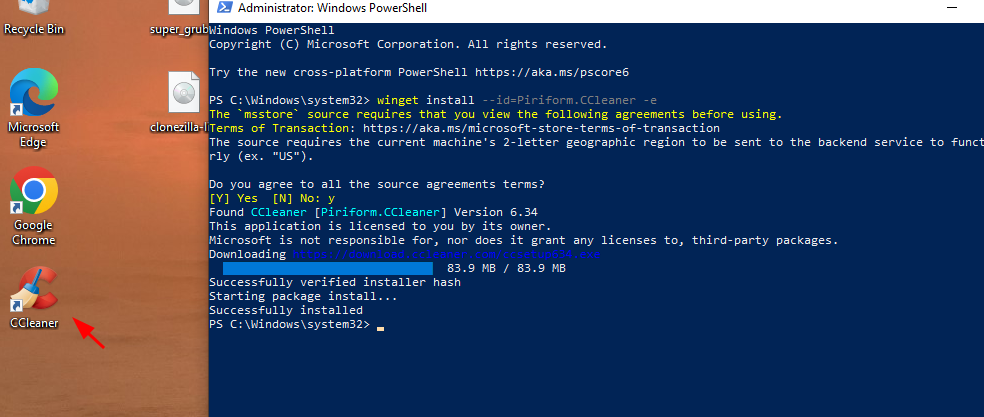
winget upgrade --all (PowerShell)
Actualitza totes les aplicacions disponibles en el repositori de winget.
Permet mantenir les aplicacions al dia.
⚠️ Només actualitza aplicacions que han estat instal·lades o reconegudes per winget.
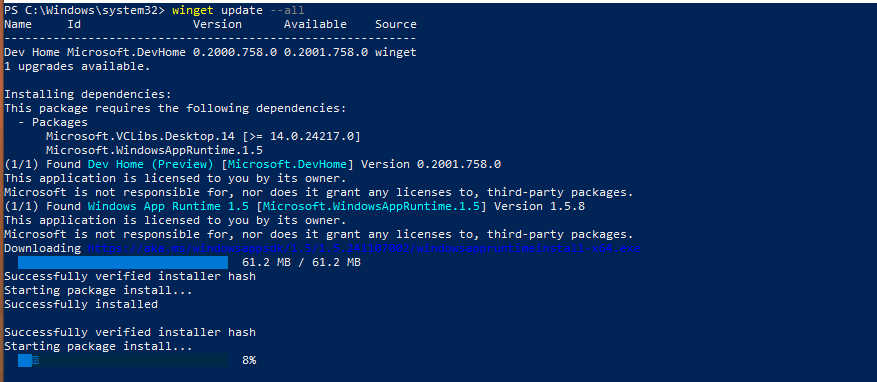
Repair-Volume (PowerShell)
Repara volums o particions danyades.
Repair-Volume -DriveLetter C -Scan
És l’equivalent avançat de chkdsk, i permet fer-ho des de PowerShell amb més control.
Get-EventLog (PowerShell)
Consulta els registres d’esdeveniments de Windows.
Get-EventLog -LogName System -Newest 20
Essencial per diagnosticar errors del sistema, arrencades fallides o problemes de serveis.
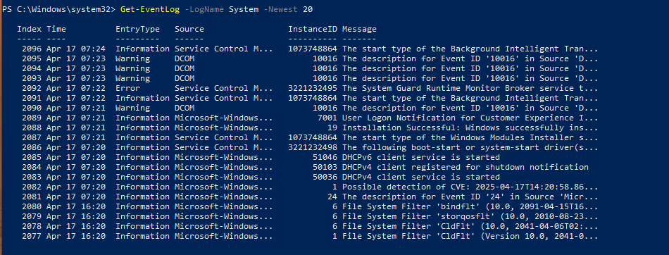
Hyper-V
Hyper-V és una plataforma de virtualització inclosa en Windows 10/11 Pro, Enterprise i Windows Server.
Permet crear i gestionar màquines virtuals (VMs) dins del mateix sistema operatiu.
Activar Hyper-V (PowerShell com a administrador):
Enable-WindowsOptionalFeature -Online -FeatureName Microsoft-Hyper-V -All
Amb aquesta comanda s’activa el rol de Hyper-V, però és necessari reiniciar l’equip després.
Crear una màquina virtual (exemple bàsic):
New-VM -Name "UbuntuVM" -MemoryStartupBytes 2GB -Generation 2 -NewVHDPath "C:\VMs\UbuntuVM.vhdx" -NewVHDSizeBytes 40GB -SwitchName "Default Switch"
Aquesta comanda crea una màquina virtual anomenada “UbuntuVM” amb 2 GB de RAM, un disc virtual de 40 GB i xarxa assignada.
Iniciar una màquina virtual:
Start-VM -Name "UbuntuVM"
Aturar una màquina virtual:
Stop-VM -Name "UbuntuVM"
Llistar totes les màquines virtuals:
Get-VM
Per què és important?
Hyper-V permet provar sistemes operatius, entorns de desenvolupament o serveis de xarxa sense necessitat d’instal·lar-los físicament.
És molt útil per a tècnics, estudiants i administradors que volen fer proves reals sense risc.
⚠️ Hyper-V només està disponible en sistemes de 64 bits amb suport de virtualització activat a la BIOS (Intel VT-x o AMD-V).